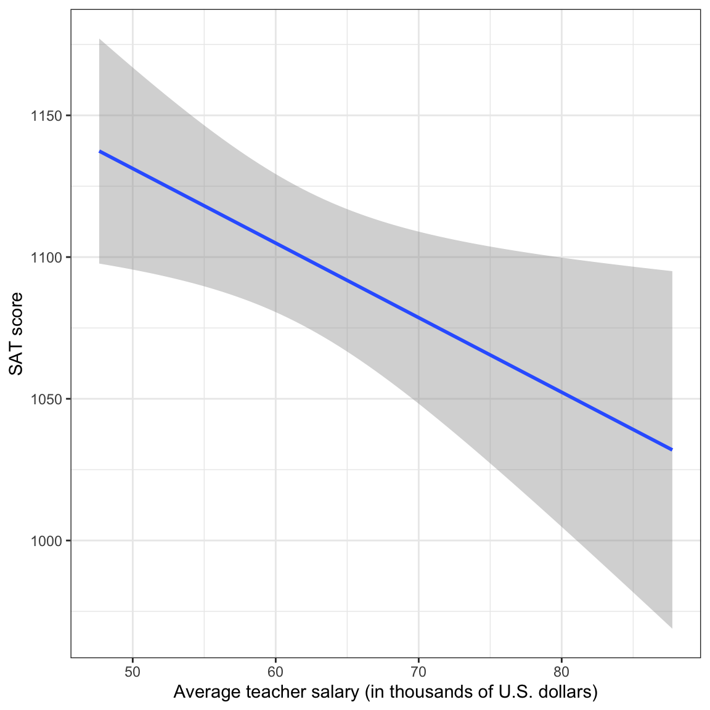

This assignment is worth 10 points. Each question is worth 1 point unless otherwise noted.
Author
Answer Key
Published
August 7, 2023
Code
source("../assets/notes-setup.R")# Load librarieslibrary(tidyverse)library(corrr)library(educate)# Import dataeduc =read_csv(file ="https://raw.githubusercontent.com/zief0002/rustic-penguin/main/data/state-education.csv") |>mutate(salary_thousand = salary_2020_21 /1000 )# Fit modellm.1=lm(sat_total ~1+ salary_thousand, data = educ)#glance(lm.1)#tidy(lm.1)
1. Using symbols, write the null hypothesis that is tested by the F-statistic in this analysis.
\[
H_0: \rho^2 = 0
\]
2. Write no more than three sentences (to be included in a publication) that summarizes the results of the omnibus analysis. A summarization of the results includes a written description of what is being tested by the F-test and the statistical results. At a minimum report the F-statistic, df, and p-value. A summary should also indicate what the statistical results suggest about the compatibility of the empirical data to the null hypothesis and what this means about the potential relationship between states’ average teacher salaries and average SAT scores.
The empirical data are inconsistent with the null hypothesis of no variation explained by the model, \(F(1, 49)=5.56\), \(p=0.022\). This suggests that the model does likely explain variation in average SAT scores in the population, \(R^2=0.102\).
3. Using symbols, write the null hypothesis that is tested by the t-statistic for the slope.
\[
H_0: \beta_1 = 0
\]
4. Based on the results of the t-test for the slope, are the empirical data consistent with the null hypothesis that the sample slope is entirely due to sampling error? Explain.
The results of the t-test suggest the empirical data are inconsistent with the null hypothesis that the sample slope is due entirely to sampling error (\(p=.022\)).
5. Compute and interpret the 95% compatibility interval for the slope.
Given the uncertainty in the empirical data, population models having slopes between \(-4.87\) and \(-0.39\) are all compatible with the data. OR With 95% confidence the population slope is between \(-4.87\) and \(-0.39\).
6. Create a plot that displays the regression line from the unstandardized regression analysis. This plot should also include a confidence envelope (uncertainty) for the regression line. Be sure to give your plot an appropriate caption.
Code
ggplot(data = educ, aes(x = salary_thousand, y = sat_total)) +geom_smooth(method ="lm") +#geom_abline(intercept = 74.3, slope = 1.21) +xlab("Average teacher salary (in thousands of U.S. dollars)") +ylab("SAT score") +theme_bw()

Figure 1: SAT score plotted as a function of average teacher salary. The OLS regression line (blue) and 95% confidence envelope (grey) are also displayed.
7. The results of the F‐test for this analysis are identical to the results of the F‐test for the analysis in Part I. Explain why this is expected by referring to and comparing the hypothesis being tested in both sets of analyses.
In both sets of analyses, the hypothesis being tested by the F-test is that the population variance accounted for is equal to zero. Since the \(R^2\) value is identical for the two analyses, and the df are the same across the analyses, the results of the F-test should be identical.
8. The results of the t‐test for the intercept in this analysis are different than the results of the t‐test for the intercept in the analysis in Part I. Explain why this is expected by referring to and comparing the hypothesis being tested (and what that means) in both sets of analyses.
The hypothesis being tested for both analyses is that the population intercept is equal to zero. In the first analysis, this is testing whether the average SAT score for states that have an average teacher salary of $0 is equal to zero. Whereas, in the second analysis, this is testing whether the average SAT score for states that have an average teacher salary at the national average ($61739) is equal to zero.
Part III: Standardized Regression
9. The p-value of the t-test for the intercept in this analysis is one. Explain why this is expected by referring to the hypothesis being tested in this analysis. (Hint: Think about what the intercept is and how that relates to what is being tested.)
The test is evaluating whether the population intercept value is zero. In a regression analysis using standardized variables (z-scores), the intercept will be zero; the mean predictor value is predicted to have a mean outcome value. Because of this, the hypothesis test will produce a p-value of 1; the empirical data are completely consistent with this hypothesis.
Part IV: Study Design and Causation
10. The test of the slope (regardless of analysis) suggests that teacher salaries seem to be related to SAT scores. Unfortunately this relationship is negative, indicating that higher teacher salaries are associated with lower SAT scores. A public-policy wonk wants to use this data to support the de-funding of public schools. Write a couple sentences that explain to this person why your analysis does not support this conclusion based on the study design.
The levels of teacher salary were not randomly assigned to the states. This would be the only way we could statistically imply cause-and-effect. Because the study was observational in nature, there could be confounding variables that underlie this relationship. As such, the relationship between teacher salary and SAT scores might change as we control for other variables.